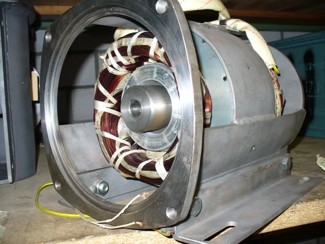

Seit 1991
Unterölmotor
Für Pump- und Hydrauliksysteme. Direkt im Ölbehälter montiert und durch das Umgebungsöl gekühlt, darum hohe Leistungsdichte bei engen Platzverhältnissen. Mit Hohlwelle, passend zu allen handelsüblichen Pumpen.
| Modell | Leistung |
|---|---|
| DMU 90/80 | 3.5 kW |
| DMU 100 und DMU 112 | 5.5 kW |
| DMU 132 | 7.5, 11 und 22 kW |
Über einen Zwischenflansch kompatibel zu Allweiler-, IMO- und RUC-Pumpen. Sondermasse auf Kundenwunsch.
Datenblatt anfragen